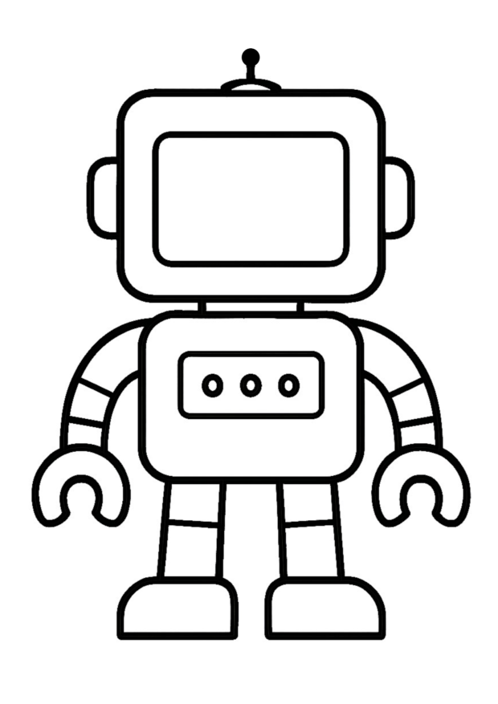

Debate
SmAIle Project
Resources & Downloads
Download the PDF versions of this scenario or the associated attachments.
Target Group: 4-7 y. o.
Activity Duration: 40 minutes
Key Learning Goals:
- Critical Thinking: Begin to think about big questions (e.g. is it fair? is it kind?) and form personal opinions.
- Speaking and Listening: Practise sharing ideas clearly and listening respectfully to others.
- Collaboration: Work with a partner to talk, share, and create together.
- Ethical Awareness: Start to explore ideas about what is right or wrong when we use technology.
- Creative Expression: Use drawing and design to express feelings and opinions.
- Decision Making: Learn to agree or disagree and explain why, building confidence in choices.
Learning Outcomes
Students will be able to:
KNOWLEDGE & UNDERSTANDING:
- Understand what robots and artificial intelligence (AI) are in simple terms.
- Recognise that people can have different ideas or opinions.
- Identify some things a robot can do and some things only a person can do.
- Understand that it's important to ask if something is fair, kind, or helpful.
- Begin to explore the idea of ethics (right and wrong choices).
SKILLS & ABILITIES:
- Listen carefully to a story and follow along.
- Share their own thoughts clearly using sentence starters.
- Work with a partner to discuss ideas (Think–Pair–Share).
- Agree or disagree respectfully, giving a reason.
- Express ideas creatively through drawing and facial expressions.
- Recognise feelings and explain them simply (e.g., “The robot is sad because…”).
ATTITUDES & VALUES:
- Show curiosity about how robots work and what they can do.
- Respect other children’s ideas, even if they are different.
- Develop empathy by thinking about how others feel.
- Feel confident in sharing personal opinions.
- Begin to think about using technology in a kind and fair way.
European Dimension / Erasmus+ Connection
- Encourage discussion around fairness, inclusion, and kindness — values shared across Europe.
- Support early digital literacy and ethical awareness linked to EU values.
- Include opportunities for children to share or display their work with partner schools in other countries.
- Promote a classroom culture of listening, respect, and understanding, aligned with Erasmus+ goals of cooperation and active citizenship.
1. Resources and Tools
Research resources:
- Age-appropriate story ("My Teacher is a Robot")
- Picture books or short videos on robots or classrooms with technology
- Simple visuals of real robots used in schools, hospitals, or homes
Materials Needed:
- Printed story or digital display
- Robot face templates for drawing expressions
- Colouring pencils or crayons
- Printed agree/disagree signs (optional)
- Space for physical movement (agree/disagree activity)
2. Working Methods
- Storytelling and Discussion – Reading a simple story to spark thinking.
- Think–Pair–Share – Structured way to help young children reflect and talk.
- Debate Warm-Up – Simple agree/disagree activity using body movement or signs.
- Creative Expression – Drawing and colouring to represent opinions and emotions.
- Display and Reflect – Creating a class display that shows diverse views (e.g., Good Robot/Bad Robot wall).
- Playful Learning – Encouraging active participation in a respectful and fun environment.
Activity Overview
The following table provides a summary of the activity flow:
| Duration | Activity | Description |
|---|---|---|
| 5 min | Introduction and Motivation | Teacher introduces the idea of sharing different opinions (debate). Explain simply what robots are and how they might help in schools. Read the story “My Teacher is a Robot” aloud. Show a picture of a robot teacher. |
| 10 min | Preparation for Agree/Disagree Activity | THINK: Quiet moment to reflect on the story. PAIR: Talk with a partner using sentence starters. SHARE: Some children share ideas with the class. Teacher lists ideas on the board (What we liked / What felt strange). |
| 10 min | Creative Application and Mini-Debate | Read simple debate statements aloud. Children show agreement or disagreement (movement, thumbs, signs). Encourage short reasons: “I agree because…” / “I disagree because…” |
| 15 min | Evaluation and Creative Task | Colour and design a robot teacher template. Choose an expression (happy, sad, helpful, etc.). Share why they chose that face and colour. Display on wall: “Good Robot Teachers” vs. “Bad Robot Teachers”. |
3. Introduction and Motivation
Introduction to Debate and Thinking About Robots and Fairness:
"Hello everyone,"
"Today we’re going to do something really exciting. We’re going to learn how to share our ideas and listen to each other , just like scientists and big thinkers do!"
"Sometimes in the world, people have different opinions. That means they don’t all think the same way — and that’s okay! When people talk about different ideas and give reasons, that’s called a debate ."
We’re going to try a little debate today about something very interesting...
"Robots and computers are getting smarter. Some people think robots could be teachers, or helpers in hospitals, or even drivers of cars. But others think we need to be very careful and ask questions like: – Is it fair? – Is it kind? – Is it safe?"
"These are called big thinking questions , or ethics . That just means thinking about what is right or wrong, fair or unfair."
"We’re going to listen, share our ideas, and think about what we believe. You don’t have to agree — but you do have to be respectful and kind when someone else shares their thoughts."
Are you ready to be big thinkers today?.
4. Research and Learning
Can robots replace your teacher?
Introduction: The teacher will read this simple story to their class with the image of a robot teacher displayed.

Simple Teacher Story: Story: My Teacher is a Robot (A story to think about)
"One morning, something very unusual happened at school. When the children walked into the classroom, their teacher wasn’t there."
"Instead, standing by the board, was a shiny, silver robot with a smooth voice and a friendly face."
“Good morning, class,” said the robot. “I am R.O.B.O – your new teacher.”
The children looked at each other in surprise.
“Where’s our usual teacher?” someone asked.
“Your teacher is away for now,” said R.O.B.O. “I will help you learn today.”
"The robot clapped its hands, and all the chairs slid neatly into place. It showed colourful pictures on the screen, helped each child with their work, and remembered everyone’s name without asking."
“This robot really does know a lot,” whispered one child.
"During story time, R.O.B.O read aloud without ever looking at the book. During maths, it gave each child a different task — just right for them."
"But when it was time to go outside, things felt a little different."
“Can you come and play a game with us?” one child asked.
“I do not play games,” said R.O.B.O. “But I can watch safely from here.”
"Later, someone dropped a pencil and looked upset. R.O.B.O quickly gave a new one, but didn’t say, “Are you all right?”"
"At the end of the day, the robot said, “You have all done very well. I will see you tomorrow.”"
The children packed their things. Some were smiling. Some were thinking. Some weren’t quite sure how they felt.
"On the way home, one child said, “That was a strange day.”"
Another nodded. “The robot helped me a lot. But I missed the way our teacher laughs.”
“I liked how the robot could do lots of things at once,” said another.
Everyone had a different opinion. But they all agreed: Tomorrow would be interesting — whether they learned from a person or a robot.
The End.
Think–Pair–Share Activity: "Robot Teacher – What Do You Think?"
This strategy will help children reflect on the story, explore their own ideas, listen to others, and prepare for the agree/disagree debate.
THINK (quiet time – 1 minute)
After reading the story "My Teacher is a Robot", ask the children to sit quietly and think about what they liked or didn’t like about having a robot as a teacher.
Suggested teacher prompts: “Let’s take a quiet moment to think. What did you think about the robot teacher? What was good? What was strange or different?”
PAIR (talk with a partner – 2–3 minutes)
Ask children to turn to the person next to them (or assign pairs if needed).
Give them simple sentence starters to help them share:
- “I think a robot teacher is ___ because ___.”
- “I liked when the robot ___.”
- “I’m not sure about the robot teacher because ___.”
Model an example if needed: “I think a robot teacher is interesting because it can help everyone at the same time.”
SHARE
(This step is from the Activity Overview table) Some children share ideas with the class. The teacher lists ideas on the board (What we liked / What felt strange).
5. Creative Application
Share Activity:
Here’s a list of simple “agree or disagree” questions based on the story "My Teacher is a Robot" . These statements are short, easy to understand, and designed to encourage children to reflect and express their thoughts clearly. The teacher could start by modelling how to say “I agree because…” or “I disagree because…” to help the children learn how to give a reason for their choice.
Agree or Disagree?
(Children can respond by standing on one side of the room, using thumbs up/down, or holding up signs)
- A robot teacher can help you learn just as well as a person.
- Robot teachers are better because they never get tired.
- It’s important to have someone who knows how you feel.
- Robots can be good teachers because they always follow the rules.
- I would like to have a robot teacher every day.
- A real teacher is better at playing and having fun.
- Robots should never be teachers.
- Robots can help in the classroom, but shouldn’t be the only teacher.
- I would miss a real teacher if a robot took their place.
- Sometimes, it's nice to have both a robot and a real teacher.
6. Reflection and Evaluation
Students will be given a robot template to color and draw a facial expression.
To follow up activity one students will be given a template of a robot (att 2). They must decide what colour the robot will be and what expression the robot will have. They must justify if the robot has a happy, sad, angry expression etc. They must justify why they designed their robot to be good or bad, happy or sad, helpful or unhelpful. This will lead to a debate between children and by displaying their robots on the wall this will show the result of the debate. One side for the “Bad Robot Teacher” and the other for “The Good Robot Teacher”.
Online Resources and References
Here are some free online stories and read-alouds featuring robots that are perfect for kids:
- “Socket the Friendly Robot” (YouTube) A charming read-aloud where Socket befriends a mouse and learns valuable lessons.
- “Robots Don't Make You Go to Bed” (YouTube) A fun bedtime-themed robot story—ideal for winding down.
- “The Robot Bedtime Book” by Daniel Errico A playful bedtime tale encouraging kids to pretend‑play like robots as they fall asleep—all for free online. (freechildrenstories.com, youtube.com)
- “Six Silly Robots” (PDF) A simple rhyming & counting story with math integration from The Math Learning Center —great for early readers. (mathlearningcenter.org)
- “Little Robot” A gentle illustrated story (about a curious robot named Riko) perfect for bedtime reading. (readthetale.com)
- StoryJumper “Robbie the Robot” A public 16‑page picture book where a young inventor makes a robot friend—readable for free after signing up. (storyjumper.com, lifewire.com)
- StoryJumper “Teaching robotics in Kindergarten” A fun 34‑page story introducing robots and coding in a classroom setting—free to read on StoryJumper. (storyjumper.com)
- OhMyTales Robot Stories Collection Over 120 free children’s stories involving robots, including adventures like “Tommy's Robot Rescue”. (ohmytales.com)
- International Children’s Digital Library (ICDL) Free access to thousands of children’s books in dozens of languages—search “robot” to find robot-themed titles. (en.wikipedia.org, ohmytales.com)
- Internet Archive’s Children’s Library A wide selection of free illustrated children’s books; try searching for “robot” to see what’s available. (en.wikipedia.org)

This work is licensed under a Creative Commons Attribution 4.0 International License.